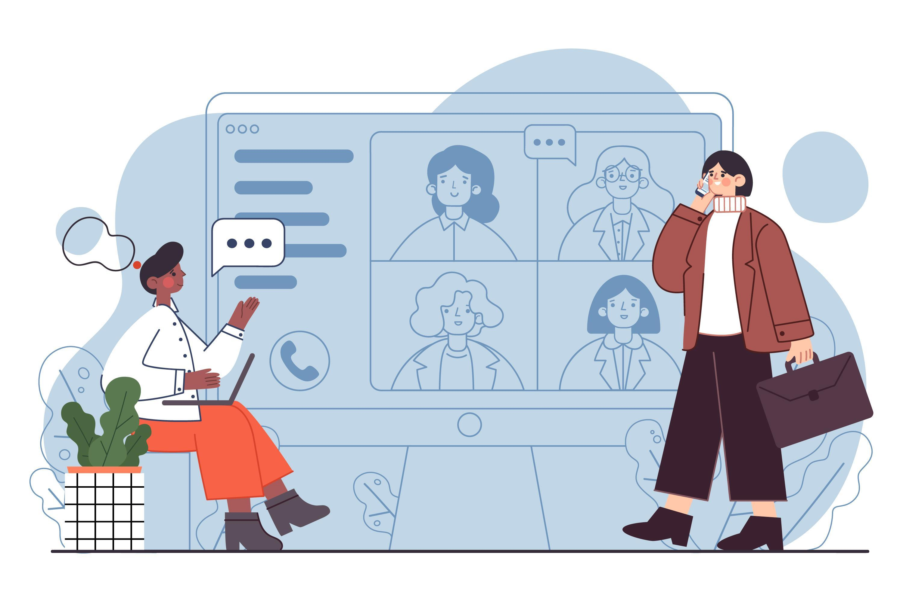
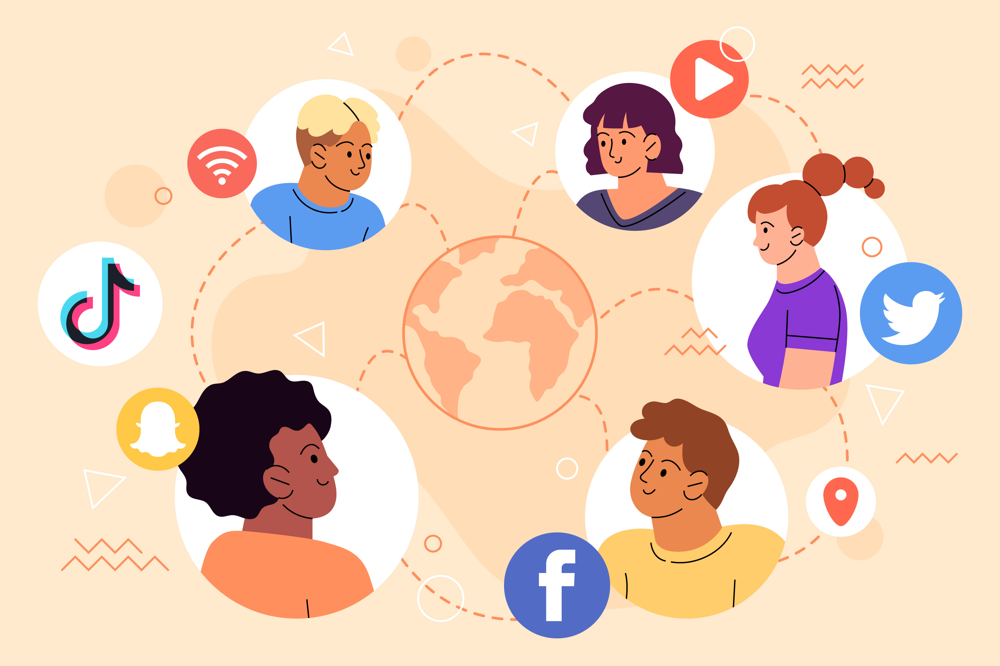
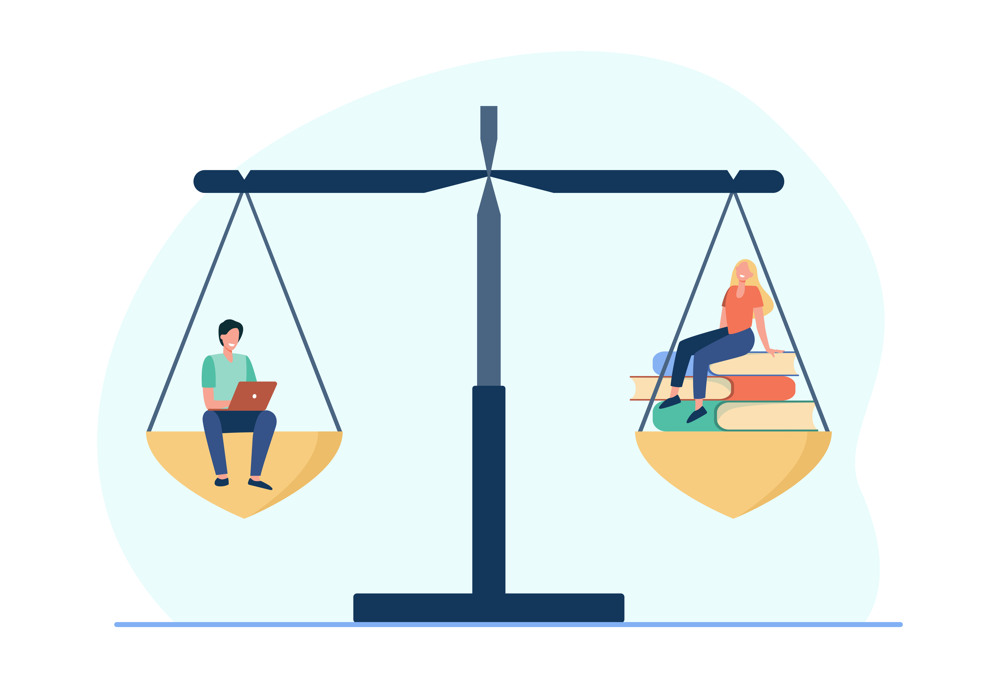

REDUCED ECONOMIC OPPORTUNITIES
Economic opportunity is the chance for people to improve their standard of living through employment.
Difficulty Securing Employment
In the future, it may be challenging for individuals to find employment without digital skills. As technology continues to advance, more and more jobs require individuals to be proficient in using digital tools. This creates difficulties for people who lack these skills, as it makes it tough for them to find jobs. Even young people will be affected by this, as they’ll need to find jobs in the future. Therefore, developing their digital skills will increase the economic opportunities available to them.
Limited Participation in Global Economy
Disconnected individuals are unable to fully participate in the global digital economy, which limits their access to valuable employment and economic advancement. As jobs that require digital skills often pay higher wages than low-skill positions, and individuals lacking digital proficiency may miss out on these better-paying opportunities, leading to reduced economic opportunities. Additionally, the digital divide can hinder entrepreneurship and innovation, as individuals without digital skills may find it challenging to start and grow businesses in the digital era. This can limit economic growth and prevent new ideas and products from emerging.
SOCIAL INCLUSION ISSUES
Social inclusion is the act of making all groups of people within a society feel valued and important.
Limited Social Participation
Without access to digital technologies, individuals may struggle to participate in online social interactions and communications. Platforms like Facebook, Instagram, and TikTok play a significant role in facilitating connections between friends, family, and even strangers. As they provide users with a platform to express themselves, share information, and stay connected with others.
Barriers to Information and Engagement
Digital technologies have enabled users to access information, stay updated about current events and participate in discussions. Many people rely on social media platforms as a source of information. People who lack access to such technologies may feel disconnected from their peers, miss out on social opportunities, and struggle to communicate with others in the same way as digital-enabled individuals.
DIGITAL INEQUALITY
Digital inequality means some people have less access, control, and skill in using technology.
Tech Partnership Basic Digital Skills Framework
The Tech Partnership Basic Digital Skills framework is a set of five digital skills that are considered crucial for measuring digital inclusion. These skills include managing information, using search engines effectively, communicating online, transacting securely, problem-solving, and creating content.
Addressing Information Inequality
Access to digital resources and the ability to critically evaluate information are crucial for addressing information inequality. By developing these skills, individuals can navigate the online world safely and responsibly, ensuring they can access reliable information and avoid being misled by misinformation. Moreover, individuals who lack digital skills may struggle to access educational and economic opportunities. In todays digital age, many educational institutions and business operate online. Without the ability to access and use digital tools, individuals may miss out on valuable opportunities for personal and professional growth. This can worsen existing inequalities and further marginalise already disadvantaged communities.